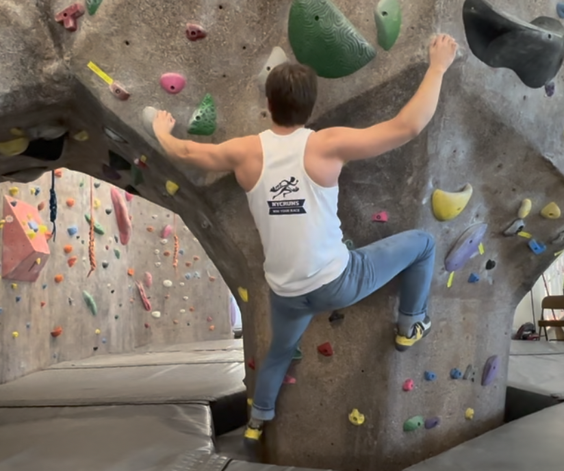
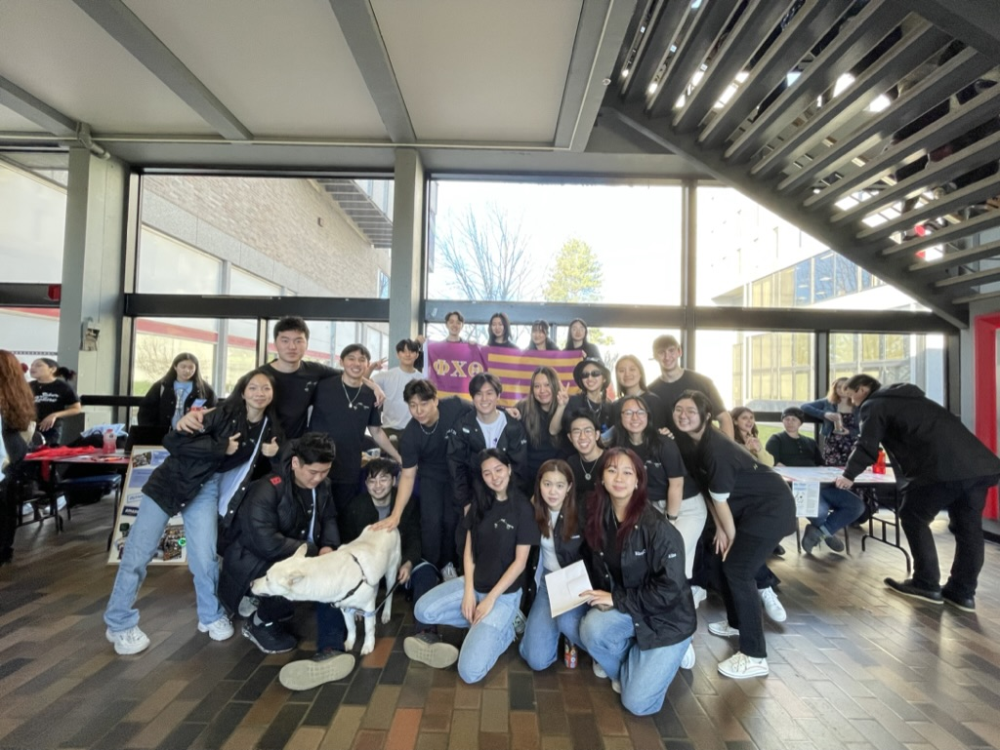
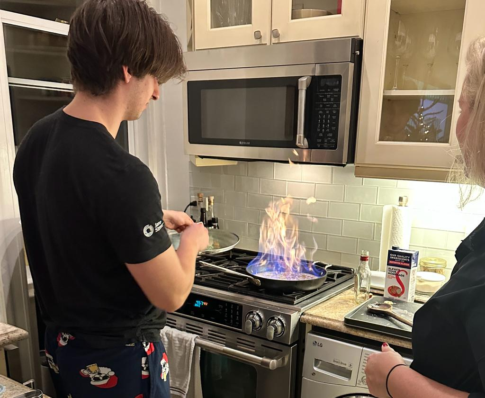

- Class of 2025
- B.A. in Computer Science, Minor in Economics
- Teaching Assistant for cs412 (Full-Stack Applications)

About me
Hello there, my name is Will, and I'm originally from Manhattan, although I have lived in a few other cities, my family has found our way back there yet again! Currently, I'm a senior and aspiring software engineer studying at Boston University.
I absolutely love learning new skills and challenging myself in different aspects. To learn more about what I've been working on, feel free to check out my GitHub 😁.
Projects

Grub Gallery
Grub Gallery is a dynamic web application built using the MERN stack, integrating Google OAuth, Spoonacular API, and Google Calendar API. This project allows users to discover and personalize dishes and recipes effortlessly.
ZipSurf
ZipSurf is a React based web application designed to enabling users to create, save, delete, and export shortened URLs
How I spend my free time?

|
CodingEven though we have to code constantly for class, this is something that I genuinely enjoy learning in my free time. Especially for when it comes to web-development, where the creative opportunities are literally endless, I find myself spending hours going down rabbit holes of formative exploration. |
Quicklinks |
|  |
Rock ClimbingI started rock climbing about 2 years ago, and since then, it has been nothing short of amazing (maybe even addicting). I love the challenge of finding the optimal "beta" through a problem, and pushing your body to it's limit. |
Quicklinks |
|  |
BU Phi Chi Theta (PCT)I joined PCT (a professional business fraternity) my very first semesert at BU. It was probably one of the most impactfuly decsions I've made in terms of the friends made, skills acquired, and abundance of unique experiences. (Feel free to check out our website WhyPhi 😜) |
Quicklinks |
|  |
CookingGrowing up, I always had the opportunity to watch my mom cook, and even help out in the kitchen. Once my parents started working more, I ended up taking more responsibility for cooking meals for the whole family. This slowly grew into a passion, and now is something that I spend a lot of free time doing for fun! |
Quicklinks |